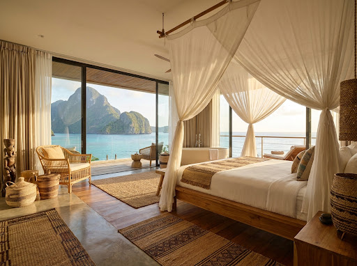
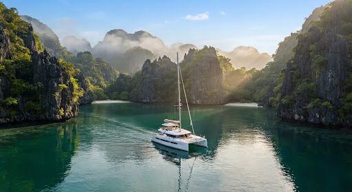
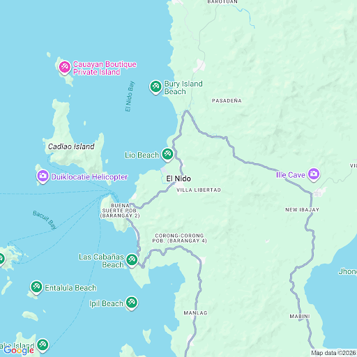

BACUIT BAY · EL NIDO
An island that keeps the outside world outside.
Five ocean pavilions, one private lagoon, and a stay shaped around the people you brought with you.
Warm air · soft tide · clear passage
Private estate buyout
Lagoon arrival
Island team included
Built around your pace
01 · THE SANCTUARY
Architecture that lets the island speak first.
Timber, woven fiber, stone and open air frame the lagoon without competing with it.

Full height glass disappears into the wall so the pavilion opens directly to the bay.
02 · A DAY AT VILLA TALA
The itinerary follows the light.
Choose a moment and watch the island shift around you.

FIRST LIGHT
Sail before the bay wakes.
Leave the private pier while the water is still glass and the public routes are still quiet.

03 · THE PLACE
Close enough to reach. Far enough to disappear.
The journey begins at Lio and moves across Bacuit Bay into a private channel framed by limestone towers.
Route and timings are illustrative for this portfolio concept.
04 · PRIVATE STAY BUILDER
Make the island yours.
Configure an illustrative stay and see the experience take shape in real time.